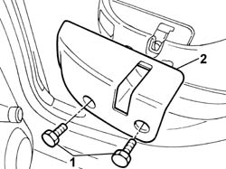

7050A68 lh or rh protection (one) of one rear seat squab release mechanism r r
- Path
- Procedures > 70 FITTINGS > 7050 REAR SEATS > 7050A rear seat assembly > 7050A68 lh or rh protection (one) of one rear seat squab release mechanism r r
- Kind
- repair procedure (removal / refitting; the operation number is the code)
- Applies to
- all engines; all production periods
- Interactive page
- https://sloeber94.github.io/elrnDB-fPnd/en/#/2753278
Applies to: all engines; all production periods
 Removing
Removing
 Refitting
RefittingLower the rear seat backrest.
1. Undo the retaining bolts.
2. Remove the rear seat backrest attachment protection.

Applies to: all engines; all production periods
Refitting
RemovingFit the rear seat backrest attachment protection.
Tighten the bolts.
Lift up the rear seat backrest.